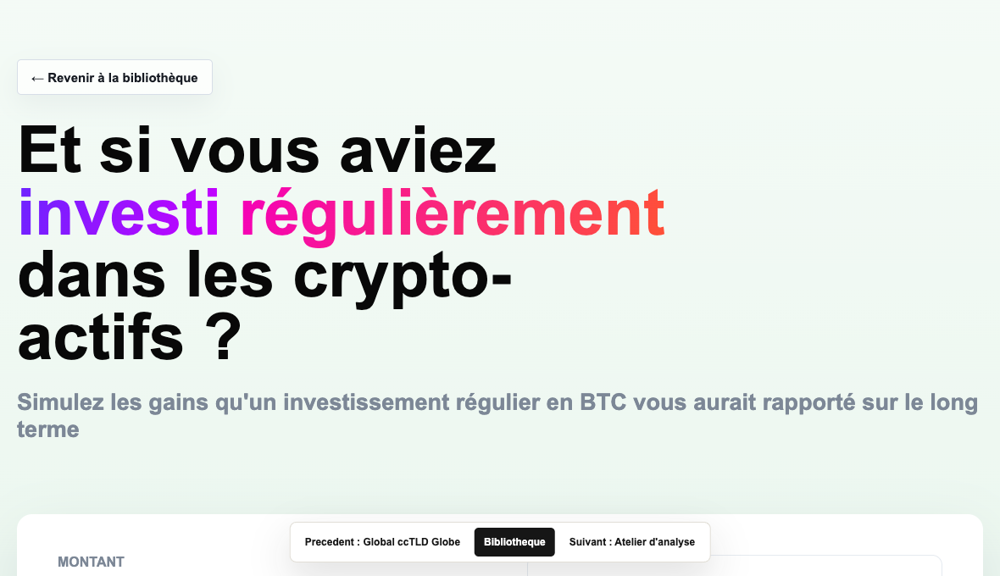
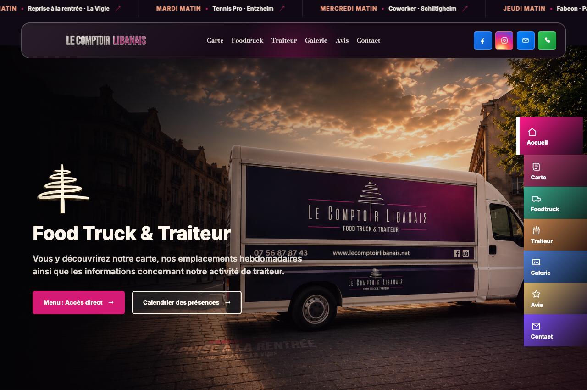
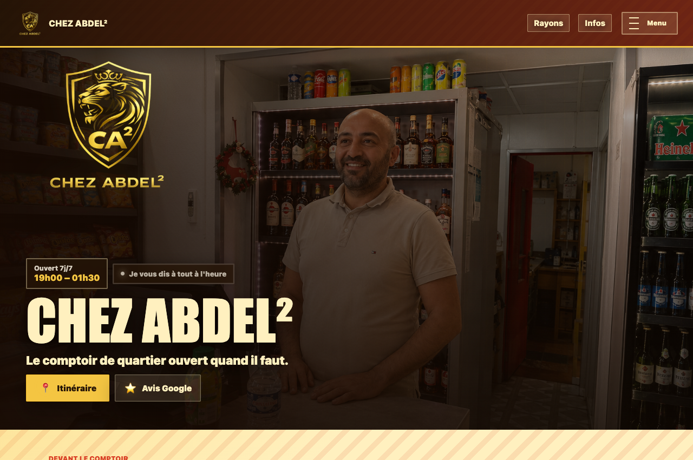
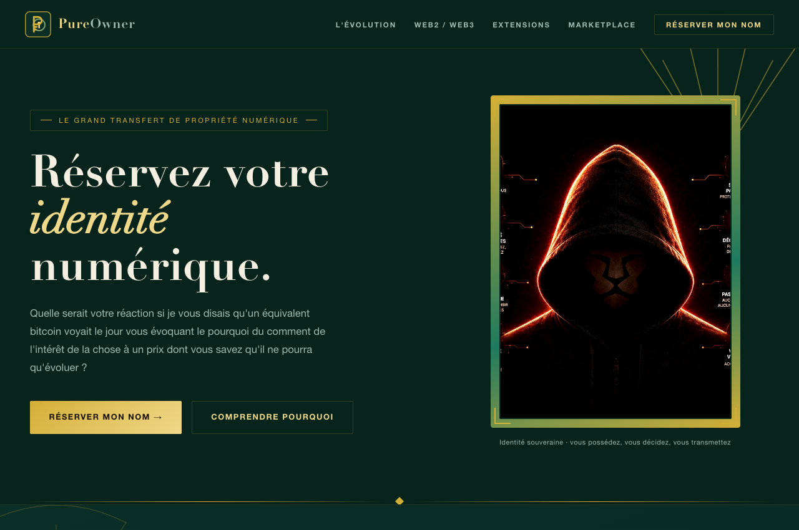
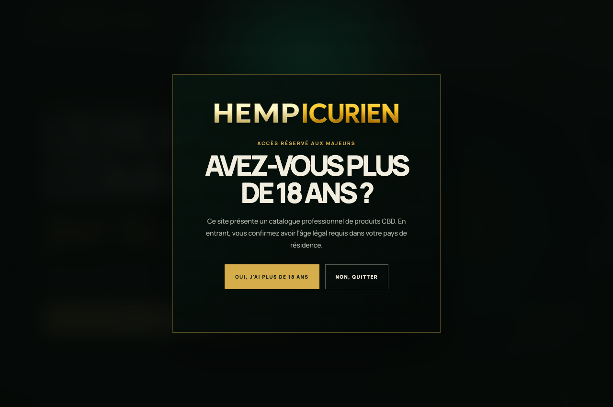

Lecture nette des signaux
Tableau de bord
Rassembler les chiffres, signaux et actions prioritaires dans une interface qui aide vraiment a decider.

Intention, utilite, vision
Un tableau de bord doit montrer moins, mais mieux. Il raconte ce qui se passe et ce qui merite attention.
- Indicateurs essentiels
- Alertes et filtres
- Exports lisibles
Exemples de mise en oeuvre




A quel besoin client cela correspond
- Voir les priorites rapidement
- Suivre une activite sans se noyer
- Partager une lecture commune
Photo a proposerVue large d un dashboard lisible avec indicateurs cles.
Photo a proposerDetail d une alerte ou d un graphique decisionnel.
Interets financiers et operationnels
- Decisions plus rapides
- Meilleur pilotage commercial ou operationnel
- Moins de temps passe a compiler